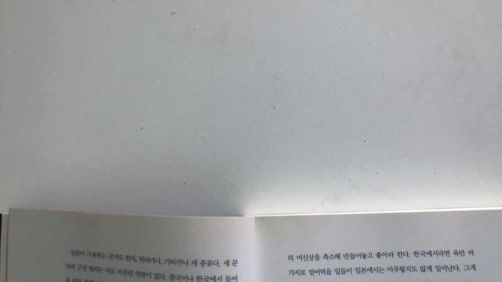
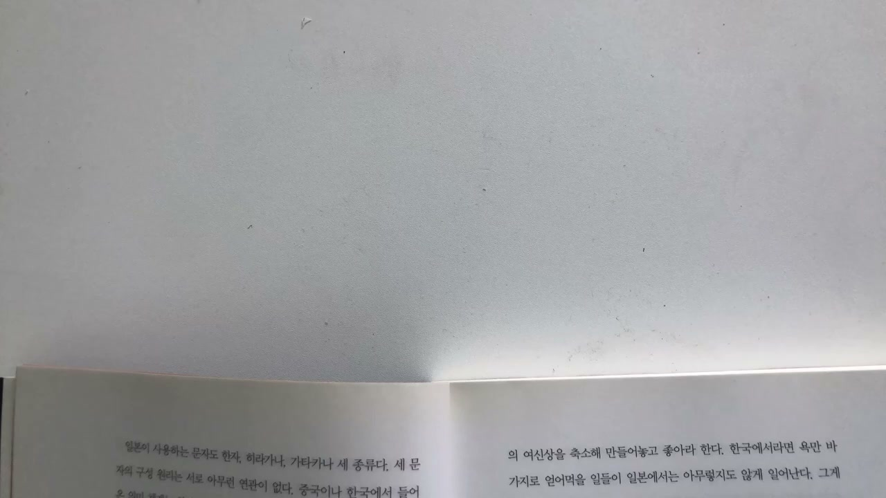
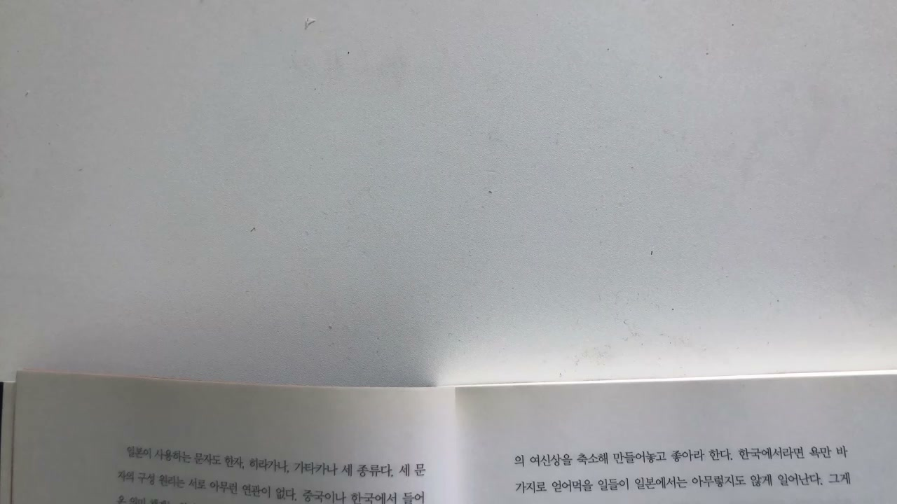
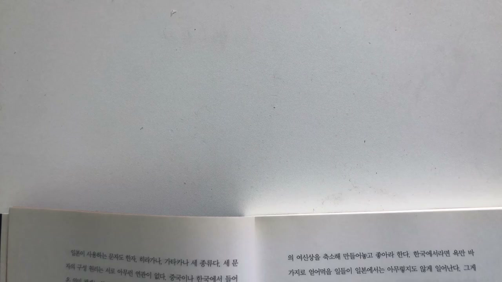

이 글은 전체 2편 중 2편입니다. 긴 영상을 주제 흐름에 맞춰 나누어 정리했습니다.
이 글은 전체 2편 중 2편입니다.
채널: 사슴책방 | 길이: 42:45 | 날짜: 2020-09-27
강연자는 먼저 자판의 불편함을 통해 기술과 습관의 관계를 설명한다. 한국어 문장에서는 과거형이나 종결 표현 등으로 쌍시옷이 자주 등장하는데, 일반 자판에서 이를 입력하려면 쉬프트 키와 자음 키를 함께 눌러야 한다. 즉 일상적으로 많이 쓰는 글자를 치기 위해 매번 손가락 조합을 동원해야 하는 구조다. 쉬프트 키를 누르는 새끼손가락까지 동원해야 하는 이 방식은 사용자의 몸에 불편을 만든다.
그러나 QWERTY 자판은 이미 150년 넘게 매일 반복되어 온 습관의 장치가 되었기 때문에 쉽게 바뀌지 않는다. 자판의 여러 불편함을 해소하려는 새로운 배열이 나왔지만, 이미 QWERTY에 익숙해진 사람들은 다른 방식으로 넘어가기 어려웠다. 여기서 강연자가 강조하는 것은 기술의 합리성보다 반복된 습관의 힘이다. 어떤 도구가 오래 살아남는 이유는 그것이 가장 합리적이어서가 아니라, 사람들의 몸과 생활에 깊이 박혔기 때문일 수 있다.
이 문제의식은 곧 “자판의 한계를 근본적으로 바꾼 도구”인 마우스로 넘어간다. 마우스는 키보드의 불편을 조금 고치는 수준이 아니라, 인간이 컴퓨터와 상호작용하는 방식을 바꾸었다. 버튼을 외우고 명령어를 입력하는 방식에서, 화면 위의 대상을 선택하고 움직이는 방식으로 전환시킨 것이다.
강연자는 많은 사람이 마우스를 스티브 잡스의 발명품으로 알고 있지만, 실제로는 스탠퍼드 연구센터에서 개발되었고 특허권도 그곳에 있었다고 설명한다. 스탠퍼드 측은 마우스의 활용 가능성을 깊이 고민하지 못했고, 애플에 약 3만 달러를 받고 권리를 넘겼다. 여기서 중요한 것은 잡스가 마우스를 직접 발명했는지 여부가 아니다. 잡스가 위대한 이유는 아무도 제대로 알아보지 못했던 발명품의 가치를 알아봤다는 점이다.
마우스는 그래픽 유저 인터페이스와 결합하면서 컴퓨터 사용의 문턱을 낮췄다. 이전의 컴퓨터는 명령어를 기억하고 입력해야 하는 전문가적 도구였지만, 마우스는 화면 위의 대상을 손으로 가리키고 선택하는 직관적 행위로 바꿨다. 강연자는 이를 통해 보통 사람도 “천재처럼 날아다니는 생각”을 붙잡을 수 있게 되었다고 설명한다. 복잡한 정보와 개념을 화면 위에서 이동시키고 선택하고 연결하는 일이 가능해졌기 때문이다.
이 지점에서 마우스는 단순한 입력 장치가 아니라 사고의 형식을 바꾼 도구가 된다. 키보드는 정해진 문자와 명령어를 순서대로 입력하게 하지만, 마우스는 관심의 방향을 따라 이동하고 연결하게 만든다. 클릭은 곧 선택이고, 선택은 곧 편집의 시작이다.
마우스의 중요한 결과는 하이퍼텍스트의 시대를 열었다는 점이다. 사용자는 자신의 관심 대상을 클릭하면 즉시 다른 정보로 연결된다. 텍스트는 더 이상 첫 줄부터 끝 줄까지 순차적으로 읽어야 하는 닫힌 구조가 아니다. 링크를 따라 이동하고, 관련 정보를 불러오고, 다시 다른 정보로 넘어가는 네트워크적 구조가 된다.
강연자는 이것을 “탈텍스트”의 시대라고 부른다. 텍스트를 벗어난다는 말은 글자가 사라진다는 뜻이 아니라, 텍스트가 고정된 순서에서 벗어나 연결 가능한 구조가 된다는 뜻이다. 이때 마우스는 사용자가 정보를 자기 관심에 따라 재배열하도록 돕는다. 즉 마우스는 편집 가능한 지식 환경의 도구다.
스티브 잡스는 이 마우스 기반의 그래픽 인터페이스를 애플 컴퓨터에 탑재했고, 더 나아가 마우스를 대체할 새로운 개념을 꺼낸다. 그것이 터치다. 마우스가 화면 위의 대상을 간접적으로 가리키는 도구였다면, 터치는 손가락이 대상을 직접 만지는 방식이다.
강연자는 MP3 플레이어 시장에서 한국 제품인 아이리버가 매우 뛰어났다고 말한다. 아이리버는 세계적으로도 대단했고, 기술적으로는 애플 아이팟보다 우수한 점이 많았다. 작은 기계 안에 녹음, 라디오, 어학 학습 기능이 들어 있었고, 음질도 더 좋았다. 반면 초기 아이팟은 단순히 음악을 듣는 기능에 집중했다.
그런데 아이팟이 등장하면서 아이리버는 빠르게 밀려났다. 사람들은 이를 애플의 디자인 때문이라고 설명했지만, 강연자는 그것이 본질이 아니라고 본다. 핵심은 “터치”였다. 아이팟 1세대는 기계식 스크롤 휠을 달고 나왔고, 예쁘기는 했지만 폭발적 반응을 만들지는 못했다. 열풍은 2002년 터치 휠이 달린 아이팟 2세대부터 시작되었다.
여기서 “누르기”와 “만지기”의 차이가 강조된다. 자판을 두드리거나 버튼을 누르는 행위는 강연자의 표현으로 지극히 공격적인 행위다. 반면 터치는 인간의 가장 기본적인 욕구와 연결된다. 만지고 만져지는 경험은 신체적이고 정서적인 차원의 상호작용이다. 잡스는 이 욕구를 기가 막히게 포착했고, 마우스 기반 GUI에서 터치 기반 디지털 시장으로 다시 이동했다.

강연자는 독일 도서관에서 학생들이 공부하는 모습을 관찰한 경험을 꺼낸다. 대부분의 학생들은 작은 카드에 무엇인가를 정리하고 있었고, 학교 앞 노점상에서도 다양한 크기의 카드를 팔고 있었다. 카드만 있는 것이 아니라, 알파벳순으로 카드를 정리할 수 있는 여러 모양의 상자도 팔았다. 나무, 가죽, 플라스틱 등 재질과 형태가 다양했다.
이 장면은 독일인의 정리 문화와 연결된다. 강연자는 독일인들에게 정리에 대한 집단 강박이 있다고 말한다. 어디든 정리가 되어 있지 않으면 불안해하고, 거의 공포에 가까운 반응을 보인다는 것이다. 독일어의 “괜찮습니까”에 해당하는 표현을 문자 그대로 풀면 “모든 것이 잘 정리되어 있습니까”에 가까워진다는 설명도 붙는다. 즉 괜찮은 상태란 정리가 제대로 된 상태다.
이 독일식 정리 문화는 학습 방식에도 반영된다. 책상 위에는 자신이 공부하며 요약한 카드와 그 카드를 정리하는 카드 박스가 놓여 있었다. 강연자는 한국식 습관대로 노트를 썼지만, 독일 학생들은 카드로 공부했다. 여기서 한국식 학습법의 문제가 “노트”에 있었다는 결론으로 넘어간다.
노트와 카드 사이의 결정적 차이는 편집 가능성이다. 노트는 한 번 순서대로 적으면 그 흐름을 다시 바꾸기 어렵다. 앞뒤 맥락이 고정되고, 이후의 생각은 기존 순서 뒤에 덧붙는 방식으로 쌓인다. 반면 카드는 독립된 단위이기 때문에 필요에 따라 얼마든지 재배열할 수 있다.
강연자는 자신이 독일에서 배운 것을 하나로 표현하면 “편집 가능성”이라고 말한다. 예를 들어 프로이트의 책을 읽으면서 중요한 내용을 카드에 정리한다. 카드 맨 위에는 키워드를 적고, 그 아래에는 관련 개념을 적는다. 요즘 식으로 말하면 연관검색어에 가까운 내용이며, 출처와 날짜도 차례로 적는다. 카드 앞뒤에는 내용을 빼곡히 적는다.
피아제, 비고츠키, 융 같은 심리학자의 책을 읽을 때도 같은 방식으로 카드를 만든다. 이렇게 모인 카드는 주로 알파벳순으로 정리하거나, 자신이 쓰려는 논문의 순서에 따라 다시 배열한다. 이 방식은 노트 필기에 비해 번거롭다. 그러나 바로 그 번거로움 때문에 생각을 이동시키고 새 구조를 만드는 힘이 생긴다.
강연자는 한국 학생들이 독일 학생들보다 훨씬 더 많이 공부하고 더 많이 외운다고 말한다. 정리하고 외우는 양만 따지면 노트로 공부한 한국 학생들이 카드로 공부하는 독일 학생들을 압도한다. 그러나 한국 학생들이 따라가기 어려운 결정적 차이가 있다. 그것은 “자기 생각”이다.
독일 학생들은 모은 카드를 자신의 생각에 따라 다시 편집한다. 카드를 쓰는 이유는 애초에 다시 편집할 수 있기 때문이다. 예를 들어 “발달”이라는 개념과 관련된 프로이트, 피아제, 비고츠키의 이름과 내용을 자기 기준에 따라 다시 정리한다. 이때 정리는 단순한 알파벳순 정렬이 아니다. 자신이 설정한 내적 일관성에 따라 카드를 새로 배열하는 것이다.
그렇게 편집된 카드 묶음이 곧 자신의 이론이 된다. 이 대목은 강연 전체의 제목인 “창조는 편집이다”를 가장 직접적으로 설명한다. 자기 이론은 아무것도 없는 상태에서 갑자기 솟아나는 것이 아니라, 이미 축적된 타인의 개념과 자료를 자기 기준으로 다시 배열할 때 생긴다.

강연자는 중요한 사실을 덧붙인다. 카드 편집을 통해 새로운 이론 구성이 가능하려면, 편집할 재료가 많아야 한다. 카드 몇 장을 아무리 뒤섞어 봐야 나오는 것은 거기서 거기다. 제한된 카드로 머리를 굴리며 자꾸 섞고 내놓는 행위를 강연자는 전문용어처럼 “순부”라고 부른다. 핵심은 재료가 충분해야 한다는 점이다.
남의 이론을 많이 읽고 열심히 공부해야 하는 이유도 여기 있다. 그것은 남의 생각을 그대로 외우기 위해서가 아니라, 편집할 수 있는 카드를 많이 만들기 위해서다. 실력이 있다는 것은 편집 가능한 자료가 많다는 뜻이다. 이렇게 카드로 축적된 편집 가능한 자료를 데이터베이스라고 부를 수 있다.
오늘날에는 이런 데이터베이스를 만들기가 훨씬 쉬워졌다. 예전에는 책을 읽으며 일일이 옮겨 적어야 했지만, 이제는 검색하고 복사해 붙여 넣으면 된다. 그래서 강연자는 “이제 실력은 잘 찾아내는 것”이라고 말한다. 검색이 곧 실력이라는 주장이다.
단순 검색이나 서핑과 구별되는 발견 과정을 강연자는 데이터마이닝이라고 설명한다. 데이터마이닝은 사방에 상상할 수 없을 정도로 축적된 디지털 데이터를 어떻게든 연결해 의미 있는 해석 방법을 찾아내려는 시도다. 전혀 예상하지 못했던 데이터 사이의 상관관계를 찾아내는 일이 핵심이다. 그래서 빅데이터 논의의 상당 부분은 데이터마이닝에 관한 논의다.
이런 맥락에서 빅데이터 큐레이터라는 직업이 미래 유망 직종으로 거론된다. 지금까지 연관성이 없어 보였던 데이터 사이의 관계를 발견하는 사람이다. 강연자는 데이터마이닝 또는 데이터 큐레이팅의 대부분이 상당히 심리학적이라고 말한다. 데이터의 의미는 숫자 그 자체보다 인간의 행동, 감정, 욕망, 패턴과 연결될 때 드러나기 때문이다.
예로 페이스북이나 블로그 포스팅을 들 수 있다. 사람들이 남긴 글을 통해 글쓴이의 심리 상태나 생활 패턴을 데이터마이닝하고, 이를 병원 마케팅에 응용하려는 시도도 가능하다. 강연자는 남의 블로그를 들여다보면 정신 상태가 애매한 이들이 의외로 많고, 상습 악플러의 경우는 심각하다고 말한다. 인터넷상의 감정 전염은 빠르고 치명적이며, 생물학적 바이러스만이 방역 대상은 아니라는 주장도 이어진다. 인간에게 파괴적 감성을 심고 공동체를 파괴하는 디지털 바이러스도 방역 대상이라는 것이다.

검색과 발견을 통한 지식의 재배열은 미래의 지식 권력을 결정한다. 강연자는 계층적 지식보다 네트워크적 지식, 쉽게 편집 가능한 지식이 더 효용성 있는 지식이 된다고 말한다. 지식의 가치는 더 이상 위계 속에서 얼마나 높은 위치에 있느냐만으로 정해지지 않는다. 얼마나 많이 연결되고 다시 배열될 수 있는지가 중요해진다.
이 관점에서 장기적으로 애플이 구글을 이기기 어렵다는 예측이 제시된다. 그것은 단지 스티브 잡스가 세상을 떠났기 때문이 아니다. 잡스가 고집한 애플 생태계의 폐쇄적 구조는 데이터 축적과 편집 가능성에서 한계를 가진다. 반면 구글은 검색과 연결, 데이터 축적, 편집 가능성이라는 측면에서 더 넓은 구조를 갖고 있다.
강연자는 21세기에는 지식의 옳고 그름을 따지는 것 자체가 그리 중요한 사안이 아니라고 말한다. 증명하고 확인해야 할 객관적 세계에 대한 신념 자체가 오래전에 폐기되었다는 표현도 나온다. 따라서 지식은 옳은 지식과 틀린 지식보다, 좋은 지식과 좋지 않은 지식으로 구분하는 것이 더 구체적이고 실용적이다. 좋은 지식의 기준은 편집 가능성이다. 현재 진행형의 세계와 상호작용하며 주체적 행위를 가능하게 하는 지식이 좋은 지식이다.
강연자는 “예능”이라는 단어가 원래 예술적 능력, 연극, 영화, 음악 등의 영역을 총체적으로 가리키는 말이었다고 설명한다. 그러나 요즘에는 거의 재미있는 TV 프로그램의 뜻으로만 쓰인다. 그렇다면 어디까지가 예능이고 어디부터가 예능이 아닌가. 강연자는 그 기준을 “자막”에서 찾는다. TV 프로그램에서 자막의 유무가 예능과 여타 프로그램을 구별 짓는 중요한 요인이라는 것이다.
MBC 무한도전의 한 장면을 예로 들면, 실제 멘트보다 자막, 행동 설명, 그림, 다양한 시각 효과가 훨씬 많다. 시청자는 그 많은 자막 정보를 화면과 동시에 처리하느라 정신없이 몰입한다. 외국에서 오래 살다 들어온 사람들은 한국 예능의 자막 밀도에 당황할 수 있다. 자막은 상황에 대한 부가 설명일 때도 있고, 의성어와 의태어일 때도 있으며, 감정과 반응을 증폭하는 장치일 때도 있다.
요즘은 화려한 CG도 자막의 중요한 요소로 사용된다. 출연자의 얼굴에 땀이나 눈물을 그려 넣고, 눈에서 레이저가 나오게 하거나, 머리 위로 비가 쏟아지게 하는 식이다. 이 자막과 시각 효과를 통해 시청자는 자막이 없을 때와는 질적으로 다른 정서적 경험을 한다. 무한도전이 오래 사랑받은 이유도 바로 이 자막의 힘에 있다고 강연자는 본다.
강연자는 자막이 PD의 영역이라고 말한다. 물론 작가의 도움이 필요하지만, 영상 편집 효과를 극대화할 수 있는 영역에 자막을 넣는 것은 전적으로 PD의 책임이라는 것이다. 수십 대의 카메라가 녹화한 화면을 오직 하나의 화면으로 편집해야 하는 PD나 영화감독은 이 시대 최고의 편집자다. 영화 역시 편집의 예술이다.
이 대목에서 “몽타주 기법”이 등장한다. 영화가 편집의 예술인 이유는 몽타주 때문이다. 몽타주는 서로 다른 맥락의 화면을 이어 붙여 새로운 의미를 만드는 방식이다. 서로 관계없어 보이는 여러 사진이나 석판 이미지를 한 화면에 담아 새로운 정서적 경험을 가능하게 하는 미술적 몽타주가, 시간의 흐름을 다루는 영화에 적용되면서 인류는 이전에 볼 수 없었던 파격적 경험을 하게 되었다.
강연자는 몽타주의 심리적 효과를 설명하기 위해 소련의 레프 쿨레쇼프를 언급한다. 쿨레쇼프는 유명 배우 모주힌의 무표정한 얼굴 화면에 서로 다른 세 장면을 이어 붙였다. 하나는 김이 모락모락 나는 수프, 하나는 관에 누워 있는 여인, 하나는 인형을 가지고 노는 어린아이였다. 관객들은 같은 배우의 같은 무표정 얼굴을 각기 다른 표정으로 받아들였다.
수프가 이어진 장면에서는 배우가 배고파하며 수프를 먹고 싶어하는 표정으로 느껴졌다. 관에 누운 여인이 이어진 장면에서는 여인의 죽음을 슬퍼하는 모습으로 해석되었다. 아이가 이어진 장면에서는 아이를 예뻐하는 모습으로 보였다. 동일한 배우의 표정이 어떻게 편집되느냐에 따라 전혀 다른 의미로 받아들여진 것이다.
이것이 몽타주의 힘이다. A 장면과 B 장면의 합은 A+B가 아니라 C가 된다. 즉 서로 다른 요소를 붙이면 단순 합이 아니라 새로운 전체가 생긴다. 강연자는 이를 게슈탈트 심리학의 명제, “부분의 합은 전체가 아니다”와 연결한다.
몽타주가 작동하는 이유는 인간이 불완전한 정보를 그대로 견디지 못하기 때문이다. 각각의 부분이 합쳐지면 부분의 특징은 사라지고, 전체로서 전혀 다른 형태가 만들어진다. 이때 인간은 불완전한 자극을 서로 연결해 완전한 형태로 만들려는 본능적 경향을 보인다. 이것이 게슈탈트 심리학의 완결성의 법칙이다.
완결성의 법칙은 중간중간이 떨어져 있는 원 모양의 선을 완전한 원으로 인식하는 경우로 설명된다. 실제로는 선이 끊겨 있지만, 인간은 그것을 완성된 원으로 본다. 불완전한 정보 상태를 인간이 못 견뎌 하기 때문이다. “왜 그녀는 그 상황에서 그런 표정을 지었을까” 같은 사소한 문제를 고민하며 밤새 잠 못 이루는 것도 불완전한 정보를 완전하게 해석하려는 시도 때문이다.
따라서 몽타주 기법은 불연속적이고 서로 모순되거나 부담스러운 정보를 의도적으로 제시해 관객의 적극적 해석을 유도하는 상호작용적 방법론이라고 할 수 있다. 영화가 재미있는 이유는 관객의 몰입을 이끌어내는 이 상호작용적 방법이 극대화되어 있기 때문이다. 관객은 수동적으로 보는 것이 아니라, 편집된 빈틈을 자신의 해석으로 채우며 참여한다.
강연자는 세상을 보는 다양한 해석이 가능하다는 것은 다양한 관점을 인정하는 일이라고 말한다. 그러나 좌표가 잡히지 않는 공간은 공포다. 내가 어디에 있는지 모르기 때문이다. 어디로 흐르는지 알 수 없는 시간은 더 큰 공포다. 공간은 발이라도 붙어 있지만, 시간은 붕 떠 있는 것처럼 느껴진다.
그래서 인간 존재의 본질은 불안이라고 설명된다. 어디서 와서 어디로 가는지 전혀 가늠할 수 없는 불안을 견디지 못해 인간은 “여기와 지금”이라는 존재 확인의 좌표를 정하기 시작한다. 시간에 대한 불안과 공포를 극복하기 위해 인간은 시간을 분절화한다. 시간을 숫자로, 마치 셀 수 있는 물건처럼 만든다.
하루를 24시간으로 쪼개고, 하루가 모여 일주일이 되고, 한 달이 되고, 365일이 모여 1년이 된다. 중요한 것은 이 1년이 매번 반복된다는 사실, 더 정확히 말하면 반복된다고 믿는 것이다. 반복되는 것은 무섭지 않다. 다시 돌아오기 때문이다. 잘못되면 다음에 다시 잘하면 된다는 믿음이 생긴다. 그래서 우리는 새해가 오는 것을 매번 축하하고 반긴다.
시간에 대한 공포와 달리 공간에 대한 공포는 훨씬 구체적이고 감각적이다. 어느 순간부터 인류는 공간에 대한 공포를 근원적으로 해결할 방법을 찾아냈다. 그것이 재현이다. 재현의 대부분은 3차원 공간을 2차원 평면으로 환원시키는 방식으로 일어난다. 무한한 공간을 통제 가능한 유한한 공간으로 바꾸는 것이다.
밤하늘의 별자리를 만들고, 땅에 지도를 만들면서 인간은 무한한 공간의 공포에서 해방되기 시작했다. 지구상 어느 곳에 떨어져도 지도상의 좌표만 분명하면 원래 위치로 돌아설 수 있기 때문이다. 지도는 공간에 질서를 부여하는 장치다. 위도와 경도라는 규칙 안에 공간을 재구성하기 때문에, 규칙이 있으면 통제 가능하다는 믿음이 생긴다.
공간에 질서를 세운다는 측면에서 지도의 원형은 문양이다. 지도를 갖기 훨씬 전, 인류는 자기 소유의 대상에 문양을 넣었다. 선사시대 생활용품에 새겨진 추상적이고 기하학적인 문양은 세계 어느 곳에서나 발견된다. 고대 인류가 사물에 문양을 그려 넣은 이유는 대상에 질서를 부여하기 위해서다.

강연자는 세계 어느 곳에서 발견되든 문양은 언제나 대칭적이고 규칙적이라고 말한다. 그 문양은 소유한 물건이 내 통제 아래 있다는 권력을 확인하려는 행위다. 흥미로운 점은 기하학적 문양이 동물이나 식물 같은 구체적 대상을 묘사한 문양보다 훨씬 먼저 나타났다는 사실이다. 이유는 간단하다. 재현 가능성 때문이다.
비대칭적인 것은 재현하기 어렵다. 동물이나 식물을 흉내 내는 구체적 문양도 재현하기 어렵다. 반면 기하학적 문양은 반복하기 쉽다. 재현 가능성이란 반복 가능하다는 뜻이고, 반복 가능성은 곧 통제 가능하다는 뜻이다. 인간은 반복할 수 있는 것을 통제할 수 있다고 믿는다.
재현은 단순히 공포 극복의 수단만은 아니었다. 3차원 공간을 2차원적으로 재현할 수 있게 되면서 인류의 창조성은 극대화되었다. 도자기나 천에 문양을 그려 넣던 인간은 어느 순간 자신이 소유한 땅에도 문양을 그려 넣기 시작했다. 이것이 공간적 규칙으로 구현된 정원이다.
자기 소유의 땅이 생기면서 사람들은 정원을 만들기 시작했다. 특히 권력이 집중된 궁전에는 항상 정원이 있었다. 대표적 예가 베르사유 궁전이다. 강연자는 이런 궁전들이 대규모 정원을 만든 이유가 단순히 절대 권력을 과시하기 위해서만은 아니라고 본다. 더 깊은 이유는 불안이다.
절대 권력자는 언제 권력에서 쫓겨날지 모른다는 공포를 갖는다. 그 불안 때문에 엄청난 정원을 만든다. 절대 권력은 자신의 눈이 닿는 공간 끝까지 규칙적이고 대칭적인 문양을 그려 넣는다. 자신의 시선이 닿는 모든 곳이 자기 권력 안에 있음을 확인하려는 시도다.
베르사유 궁전의 정원은 단순한 아름다움의 문제가 아니라, 권력이 공간을 편집하는 방식이다. 자연을 대칭과 균형의 원리로 재배열함으로써, 권력자는 자기 불안을 통제 가능한 질서로 바꾼다. 정원은 공간의 편집이고, 공간의 편집은 권력의 자기 확인이다.
절대 권력의 정원은 거기서 끝나지 않는다. 원근법의 원리까지 적용해 자신의 성이 소실점의 정반대편에 위치하도록 한다. 대칭과 균형의 정점에 자신의 시점을 놓는 것이다. 이는 자신의 시선이 닿는 모든 공간이 자기 권력 안에 있음을 확인하려는 시도다.
프랑스의 절대왕정은 무너졌지만, 권력은 계속된다. 프랑스 혁명과 반혁명, 승전과 패전의 기억을 위해 권력은 수도 파리 한복판에 개선문을 세우고, 그 개선문을 중심으로 파리 시내 공간을 재편한다. 특히 나폴레옹 3세 시기의 오스만 남작 도시계획은 근대 권력의 공간적 완성으로 제시된다. 오스만은 철저하게 원근법적 원리에 따라 도시를 재편집했다.
개선문을 중심으로 대로를 내고, 길 양쪽에는 가로수를 심었다. 시선을 가리는 것들은 모두 제거했다. 베르사유의 길 구조를 도시 전체에 확대 적용한 것이다. 권력은 이렇게 공간을 원근법의 원리로 편집해 불안에서 벗어나고자 했다.
근대 서구 권력은 성 안의 정원에서 도시 전체로 확대되고, 이제 바다를 건너 동양을 식민지로 만든다. 시작은 노골적 폭력이었다. 그러나 어느 순간부터 그 폭력은 합리성과 객관성의 언어로 무장한다. “합리적이고 과학적인 서양”이 “비과학적인 동양”을 개봉해야 한다는 도덕적 책임의 형태로 자신들의 폭력을 정당화한다.
강연자는 서양의 원근법이 근대 이후 글로벌 스탠더드가 되었다고 설명한다. 그림을 보는 시선이 하나여야 한다는 원근법은 단순한 미술 기법이 아니라 세계를 보는 방식의 표준이 되었다. 그러나 동양 회화에서는 전혀 다른 형태의 원근법을 볼 수 있다. 대표적으로 역원근법이 언급된다.
일반 원근법은 가까운 물체는 크게, 멀리 있는 물체는 작게 그린다. 역원근법은 말 그대로 정반대다. 가까운 것은 작게, 멀리 있는 것은 크게 그린다. 이것은 인식론의 차이로 해석된다. 전통적으로 동양에서는 상대방의 시선 또는 제3자의 시선이 더 중요하다고 보았기 때문이다.
역원근법은 지금 그림을 보고 있는 나의 반대편 시선에서 그림을 그렸다는 설명이다. 강연자는 서구의 원근법만이 유일하게 과학적이고 합리적이라고 주장하는 것은 우스운 이야기라고 말한다. 르네상스 이후 서구에서 확립된 원근법의 핵심은 관점의 통일에 대한 강박이다. 이 강박은 객관성, 합리성, 표준, 통일성의 철학으로 전개된 근대 서구 사상사의 핵심이기도 하다.
근대에 들어오면 이런 세계관은 권력과 맞물리며 식민주의라는 구체적 형태로 나타난다. 하나의 시선, 하나의 기준, 하나의 합리성을 세계 전체에 적용하려는 태도다. 이것은 단순히 그림을 그리는 문제가 아니라, 누가 세계를 바라보고 누가 세계를 설명할 권리를 갖느냐의 문제다.
마지막으로 강연자는 “시선 자체가 권력”이라고 말한다. 편집은 지식의 배열만이 아니라, 세계를 보는 관점의 배열이기도 하다. 누가 자료를 모으고, 누가 카드를 편집하고, 누가 자막을 붙이고, 누가 도시의 축을 정하고, 누가 하나의 원근법을 표준으로 삼느냐가 권력을 결정한다. 그래서 창조는 단순한 새로움이 아니라, 세계를 다시 배치하는 행위다.
“잡스가 위대한 것은 그 발명품의 진가를 알아보았다는 것이다.”
“누르기와 만지기는 질적으로 다르다.”
“노트와 카드의 결정적 차이는 편집 가능성이다.”
“편집된 카드가 바로 자신의 이론이 된다.”
“실력이 있다는 것은 편집할 수 있는 자료가 많다는 뜻이다.”
“이제 실력은 잘 찾아내는 것이다.”
“검색은 곧 실력이다.”
“좋은 지식의 기준은 편집 가능성에 있다.”
“영화는 편집의 예술이다.”
“A 장면과 B 장면의 합은 A+B가 아니라 C가 된다.”
“좌표가 잡히지 않는 공간은 공포다.”
“반복 가능성은 곧 통제 가능하다는 뜻이다.”
“시선 자체가 권력이 된다.”
이 파트의 핵심은 편집이 단순히 글이나 영상의 후반 작업이 아니라, 인간이 세계를 이해하고 통제하고 창조하는 근본 방식이라는 주장이다. 키보드의 관성, 마우스의 클릭, 터치의 감각, 카드의 재배열, 데이터베이스와 검색, 빅데이터 큐레이팅, 예능 자막, 영화 몽타주, 지도와 정원, 원근법과 도시계획은 모두 “편집 가능성”이라는 하나의 축으로 묶인다.
강연자는 창조를 무에서 유를 만드는 천재적 행위로 보지 않는다. 창조는 이미 존재하는 자료, 개념, 장면, 공간, 시선을 다시 연결하고 재배치하는 일이다. 따라서 공부를 잘한다는 것은 많이 외우는 것이 아니라, 편집 가능한 자료를 많이 만들고 자기 기준으로 다시 배열할 수 있다는 뜻이다. 지식의 미래 권력도 누가 더 많은 데이터를 가지고, 그것을 더 유연하게 연결하며, 더 의미 있게 편집할 수 있느냐에 달려 있다.
또한 편집은 지식의 문제를 넘어 권력의 문제다. 자막을 붙이는 사람이 장면의 감정을 바꾸고, 몽타주를 구성하는 사람이 관객의 해석을 이끌며, 지도를 그리는 사람이 공간의 질서를 정하고, 원근법을 표준화하는 사람이 세계를 보는 방식을 지배한다. 그래서 이 강연의 마지막 메시지는 단순하다. 창조는 편집이고, 편집은 곧 관점의 권력이다.
댓글
GitHub 이슈 기반 댓글 시스템입니다.